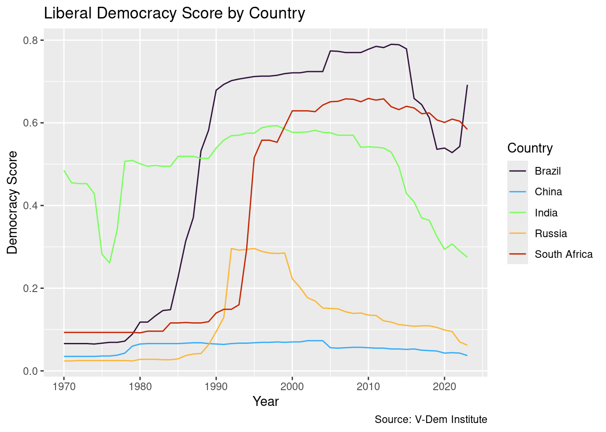
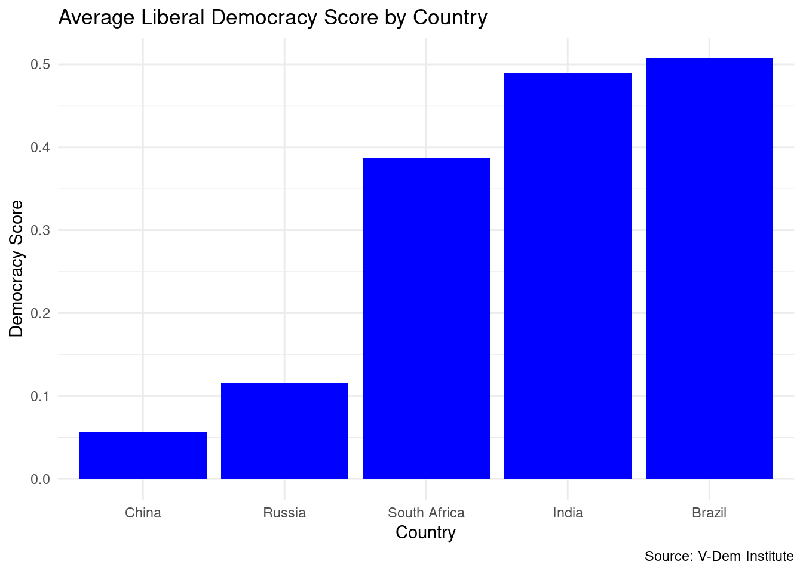
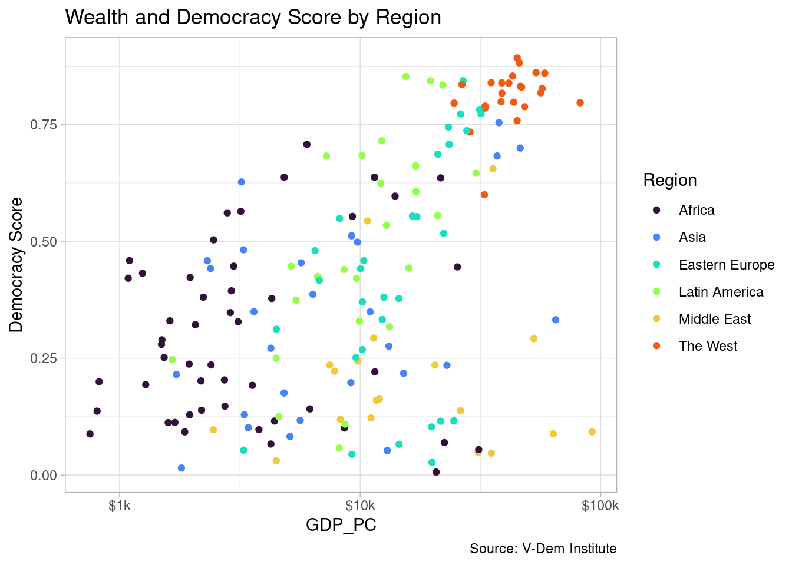
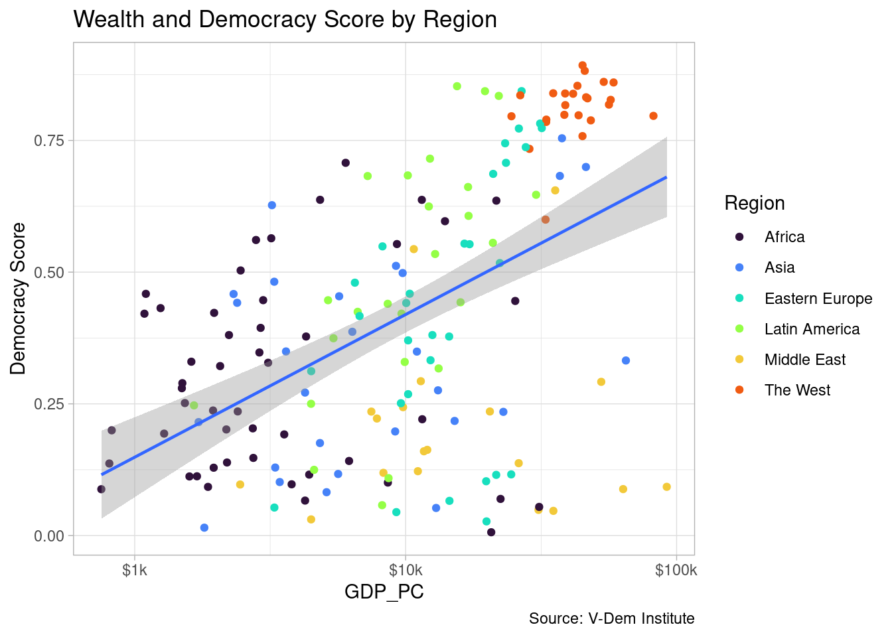
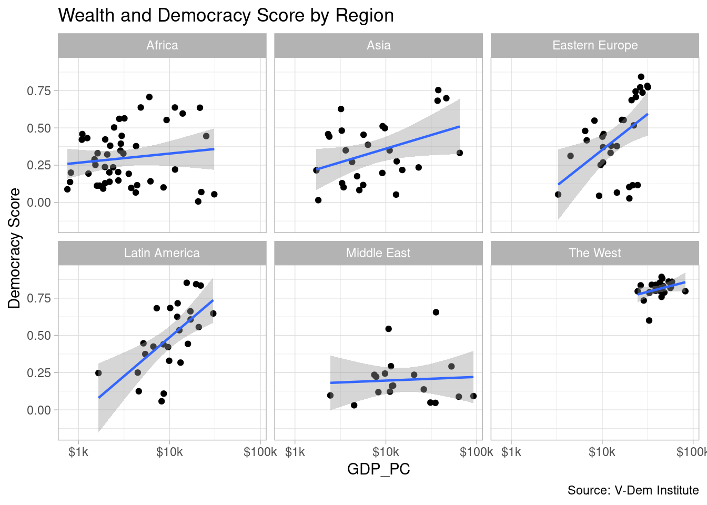
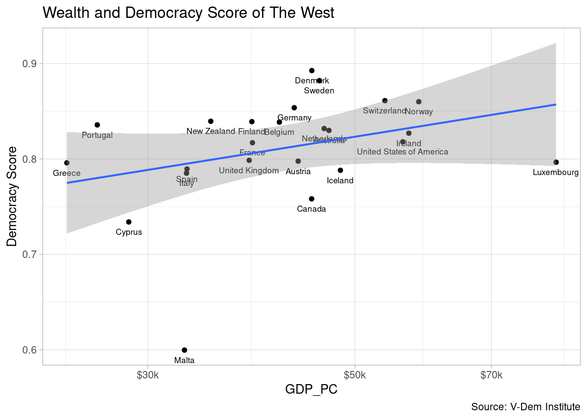

library(tidyverse)
library(plotly)Homework 1
Overview
For this assignment, you are going to evaluate modernization theory as laid out in Seymour Martin Lipset’s classic article entitled “Some Social Requisites of Democracy: Economic Development and Political Legitimacy.” How classic is this article? According to Google Scholar, this piece has been cited more than 11.5 thousand times!
We are going to use data from V-Dem and modern data viz tools to explore Lipset’s hypothesis that economic modernization is highly correlated with democracy. We have already done this to some extent by looking at the relationship between wealth and the polyarchy score. But we are going to broaden things out by looking at other measures of democracy contained in the V-Dem dataset. Specifically, you will get to choose between the following four measures:
- liberal democracy (
libdem) - participatory democracy (
partipdem) - deliberative democracy (
delibdem) - egalitarian democracy (
egaldem).
For measuring modernization we are going to stick with GDP per capita (gdp_pc).
Start by running this code chunk to import all of the packages you will need for this exercise. Then start working through the code and questions below. Feel free to grab relevant code chunks from the slides or the classwork QMD files that we have used in class so far.
Step 1: Make a line chart showing country trends (20 pts)
a) Read in the data from line_chart.csv using read_csv() in an object called line_chart_dta.
line_chart_dta<-read_csv("data/line_chart.csv")b) Now use glimpse() to inspect the data. How many rows and columns are in the data frame? Write your answer below the code chunk
glimpse(line_chart_dta)Rows: 270
Columns: 8
$ country <chr> "South Africa", "South Africa", "South Africa", "South…
$ country_text_id <chr> "ZAF", "ZAF", "ZAF", "ZAF", "ZAF", "ZAF", "ZAF", "ZAF"…
$ country_id <dbl> 8, 8, 8, 8, 8, 8, 8, 8, 8, 8, 8, 8, 8, 8, 8, 8, 8, 8, …
$ year <dbl> 1970, 1971, 1972, 1973, 1974, 1975, 1976, 1977, 1978, …
$ libdem <dbl> 0.093, 0.093, 0.093, 0.093, 0.093, 0.093, 0.093, 0.093…
$ partipdem <dbl> 0.124, 0.124, 0.124, 0.124, 0.124, 0.123, 0.123, 0.132…
$ delibdem <dbl> 0.130, 0.130, 0.130, 0.130, 0.131, 0.131, 0.131, 0.130…
$ egaldem <dbl> 0.033, 0.033, 0.033, 0.033, 0.033, 0.033, 0.033, 0.033…270 Rows // 8 Columns
c) Now click on the data frame in the Environment tab or use View() to scroll through the data frame. What countries, years and variables are in the data frame? What are the measures of democracy?
The five countries included are South Africa, Russia, Brazil, India, and China. Years range from 1970 to 2023. There is a country ID variable and a country text ID variable. The other variables are the measures of democracy, libdem- Liberal democracy indicator; partipdem- Participatory democracy indicator; delibdem- Deliberative democracy; egaldem- Egalitarian democracy indicator
d) Now choose one of the democracy indicators and visualize it with a line chart using ggplot2. Be sure to specify x =, y = and color = in your aes() call and use geom_line() to create the chart.Add appropriate axis labels, a title and a caption. Now add a colorblind-friendly color map using viridis and a theme.
ggplot(line_chart_dta, aes(x = year, y = libdem)) +
geom_line(aes(color=country)) +
labs(
title= "Liberal Democracy Score by Country",
caption= "Source: V-Dem Institute",
x= "Year",
y= "Democracy Score",
color= "Country",
) +
theme_grey()+
scale_color_viridis_d(option="turbo", end=.9)
e) In a few sentences below, interpret your chart. Describe the levels and trends in democracy scores. Put your answer right below this line in markdown text (DO NOT write your comments in a code chunk!!).
Since 1970, China has ranked poorly in liberal democracy score; Brazil has seen a sharp rise in democracy since 1984, while South Africa saw a similar change in 1995; Russia had a brief rise in democracy from the late 80s to late 90s; India started off in 1970 as the “most democratic” of the five nations, but the country has seen a decline in score since 2015.
Step 2: Make a column chart comparing regional levels (20 pts)
a) Read in the data from column_chart.csv using read_csv() in an object called column_chart_dta. You should see average democracy scores for the countries that you made a line chart for in Step 1.
column_chart_dta<-read_csv("data/column_chart.csv")b) View the data frame. Describe briefly what you see, e.g. number of rows, columns and how the countries rank in terms of one of the democracy scores.
There are 5 rows and 5 columns. Brazil and India are ranked at the top of all democracy scoring metrics, South Africa is always 3rd, and Russia then China follow for each indicator.
c) Use ggplot() and geom_col() to visualize one of the democracy measures with a column chart (you can use the same measure as in Step 1 or a different one). Use fct_reorder() to arrange the columns in order of the y-axis values. Make sure to add appropriate axis labels, a title and a caption. Change the fill color and add a theme to spruce it up a bit. Remember that these are averages over the same number of years as the line chart you made in Step 1
ggplot(column_chart_dta, aes(x = fct_reorder(country, libdem), y = libdem)) +
geom_col(fill = "blue") +
labs(
title= "Average Liberal Democracy Score by Country",
caption= "Source: V-Dem Institute",
x= "Country",
y= "Democracy Score",
) +
theme_minimal()
d) Interpret your column chart. Does the evidence in the column chart roughly match what you saw in the line chart above?
The results are mostly the same, with Brazil being at the top and Russia then China being drastically lower in democracy score when compared to the other countries. The only difference would be India’s and South Africa’s position in the charts, with the line graph showing South Africa with Brazil at the top, while the column chart suggests South Africa has a noticably lower democracy score than Brazil and India.
Step 3: Make a scatter plot (20 pts)
a) Load the scatter plot data with read_csv()from scatter_plot.csv, storing the data in an object called scatter_plot_dta. Then glimpse or view the data and describe briefly what you see. Note that the values you see are country averages for the variables over the period 2010 - 2019.
scatter_plot_dta<-read_csv("data/scatter_plot.csv")b) Now build a scatter plot with ggplot2 using these data. Put GDP on the x-axis and one of the measures of democracy on the y-axis and color the points by region. Stretch the x-axis on a log scale and use the scales package to add a prefix and suffix to the x-axis numbers to indicate that they are dollar figures. Add appropriate labels and a viridis color map and add your favorite theme. Note that you will get some warnings about a few missing data points, so try setting warning: false at the top of the code chunk with the hash pipe (#|) operator.
ggplot(data = scatter_plot_dta, aes(x = gdp_pc, y = libdem)) +
geom_point(aes(color=region)) +
scale_x_log10(labels = scales::label_number(prefix = "$", suffix = "k")) +
labs(
title= "Wealth and Democracy Score by Region",
caption= "Source: V-Dem Institute",
x= "GDP_PC",
y= "Democracy Score",
color= "Region",
) +
scale_color_viridis_d(option="turbo", end=.8)+
theme_light()
c) Next add a trend line with geom_smooth() preferably with a linear model (method = “lm”). Note that you will get some warnings about missing data points and a message about the linear model. Try setting warning: false at the top of the code chunk with the hash pipe (#|) operator.
ggplot(data = scatter_plot_dta, aes(x = gdp_pc, y = libdem)) +
geom_point(aes(color=region)) +
geom_smooth(method = "lm", linewidth = 0.8) +
scale_x_log10(labels = scales::label_number(prefix = "$", suffix = "k")) +
labs(
title= "Wealth and Democracy Score by Region",
caption= "Source: V-Dem Institute",
x= "GDP_PC",
y= "Democracy Score",
color= "Region",
) +
scale_color_viridis_d(option="turbo", end=.8)+
theme_light()
Step 4: Additional Tasks (20 pts)
a) Facet wrap your scatter plot by region.
library(paletteer)
ggplot(data = scatter_plot_dta, aes(x = gdp_pc, y = libdem)) +
geom_point() +
facet_wrap(~region) +
geom_smooth(method = "lm", linewidth = 0.8) +
scale_x_log10(labels = scales::label_number(prefix = "$", suffix = "k")) +
labs(
title= "Wealth and Democracy Score by Region",
caption= "Source: V-Dem Institute",
x= "GDP_PC",
y= "Democracy Score",
) +
theme_light()
b) Remove the facet_wrap() call and display the relationship for one region and use geom_text() to label your points.
scatter_plot_dta |>
filter(region == "The West") |>
ggplot(aes(x = gdp_pc, y = libdem)) +
geom_point() +
geom_text(aes(label = country), size = 2.5, vjust = 2.1) +
geom_smooth(method = "lm", linewidth = 0.8) +
scale_x_log10(labels = scales::label_number(prefix = "$", suffix = "k")) +
labs(
title= "Wealth and Democracy Score of The West",
caption= "Source: V-Dem Institute",
x= "GDP_PC",
y= "Democracy Score",
) +
theme_light()
c) Remove the text labels and make your scatter plot interactive using ggplotly(). Make sure that your tooltip includes the information that you want to display to the user.
libdem_scatter<-scatter_plot_dta |>
filter(region == "The West") |>
ggplot(aes(x = gdp_pc, y = libdem)) +
geom_point() +
aes(label = country)+
geom_smooth(method = "lm", linewidth = 0.8) +
scale_x_log10(labels = scales::label_number(prefix = "$", suffix = "k")) +
labs(
title= "Wealth and Democracy Score of The West",
caption= "Source: V-Dem Institute",
x= "GDP_PC",
y= "Democracy Score",
) +
theme_light()
ggplotly(libdem_scatter, tootip = c("country", "libdem", "gdp_pc"))Step 5: Interpretation (10 pts)
Interpret your results from your visualizations, including the scatter plot, line chart and column chart. Is there an obvious relationship between development and democracy? Do the data generally support Lipset’s theory?
I believe that the data does generally support Lipset’s theory because there is a slight correlation between development and democracy.
Step 6: Rendering (10 pts)
Press the render button to create your HTML document. If you get any errors go back and fix them and try again until the document renders.
Extra Credit (3 pts)
(a) Use a Quato theme to improve the look of the HTML output.
(b) Use the paletteer package to a different theme to your scatter plot from Step 4.
(c) Add annotation to your scatter plot from Step 4 using hline() or vline() to highlight a significant point in your data, like the mean or some other significant value. (Note: you will have to do some research to complete this step–we did not do it in class).
Submission
After rendering your document, export your project folder and submit it on Blackboard. You will find the link to the Coding Assignment one submission portal under the Assignments link. There are instructions along with screenshots there to assist you with the process of exporting your project as a ZIP file from Posit Cloud.